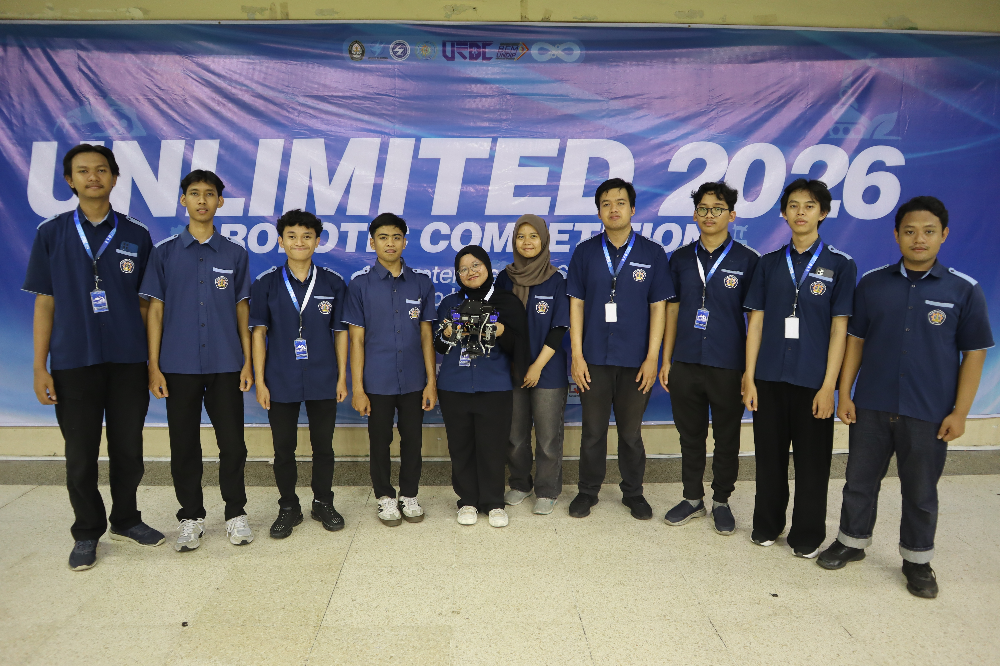
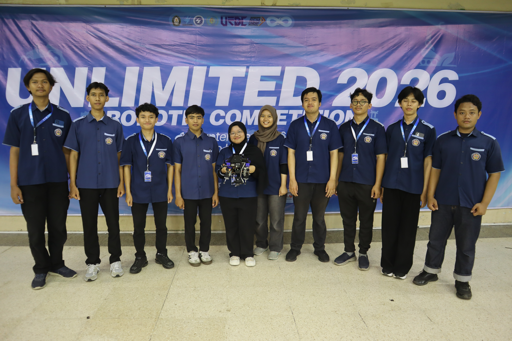
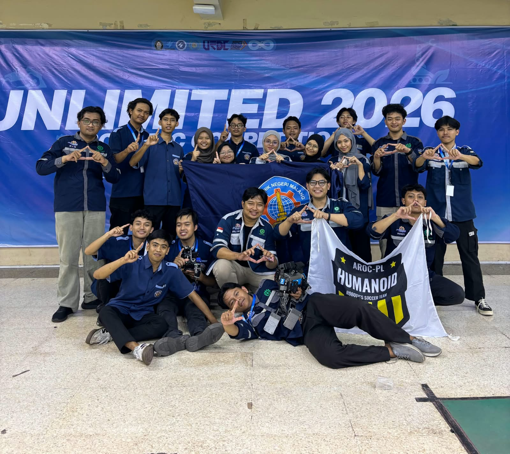

Unlimited UNDIP 2026
Polinema Robotics · Kontes Robot SAR Indonesia (KRSRI)
FokusComputer Vision & Robotika
PeranSoftware Division / Researcher
KategoriRobot Search and Rescue
Galeri Prestasi
Gunakan tombol panah untuk melihat gambar
Dokumentasi Robotics & Tech

Dokumentasi Kompetisi di UNDIP

Dokumentasi Robotics & Tech
Tentang Pengalaman
Bersama Polinema Robotics, saya mengembangkan riset computer vision untuk membantu robot SAR mendeteksi korban dan rintangan secara real-time. Pengalaman ini menghubungkan pemrosesan citra, machine learning, dan pengambilan keputusan robot di arena kompetisi.
← Kembali ke Daftar Prestasi